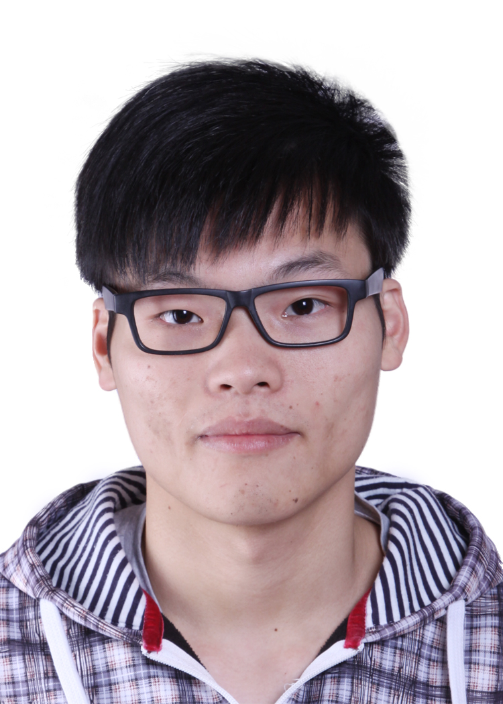

教育背景
2015.09-2017.06 北京航空航天大学 自动化科学与电气工程学院 硕士(保研)
2011.09-2015.06 北京交通大学 电子信息工程工程学院 学士(前5%)
联系电话: 18810322243
电子邮箱: sxcai@buaa.edu.cn
通讯地址: 北京航空航天大学新主楼E座E714
具有4年电控专业背景，4年的嵌入式开发经验.
研究方向为机器人领域的控制系统开发，如移动机器人，智能设备.
熟悉FPGA、ARM、DSP等芯片的开发，并了解处理器内部结构.
掌握Altium Designer、Quartus、Keil、CCS等嵌入式开发调试工具.
熟悉C/C++/C#/Python/Matlab语言，考取计算机考试二级证书(C).
精通Word、PPT、Viso等办公软件.
通过英语专业四六级考试，能熟练进行听说读写译.
阅读能力强，评审20篇以上SCI/EI检索的国际期刊、会议论文.
写作能力强，发表一篇EI检索的英文论文.
2015.08-至今 三自由度永磁球形电机高精度位置控制的关键技术研究,项目组组长, 国家科学自然基金项目.
2014.07-2015.07 羽毛球发接球一体化机器人技术研究,机器人队队长, 全国大学生机器人大赛.
2014.05-2014.07 基于Kinect传感器的室内移动机器人关键技术研究,项目组组长, 大学生创新计划.
A Robust Mixed H2/H∞ Tracking Control For 3-DOF Permanent Magnet Spherical Actuator, Shaoxiong Cai, Jingmeng Liu, etc, IEEE Conference on Industrial Electronics and Applications (ICIEA 2017). [pdf]
2015.07-至今 Robopassion工作室,工作室合伙人.
2015.07-2016.01 北京光年无限科技有限公司,硬件工程师.
2014.07-2014.08 深圳市大疆创新科技有限公司,软件工程师.
2016.09-2017.06 担任北京航空航天大学自动化学院宣传部副部长.
2013.09-2015.06 担任北京交通大学机器人协会会长.
第十四届全国大学生机器人大赛(Robocon2015),全国二等奖.
第十三届全国大学生机器人大赛Robocon2014),全国二等奖.
美国大学生数学建模竞赛(MCM/ICM),国际二等奖.[pdf]
全国大学生数学建模竞赛(高社杯),北京市一等奖.[pdf]
全国大学生电子设计竞赛,北京市三等奖.
“陀螺仪在轮式机器人控制中的应用研究”,大学生创新计划北京市级大创成果.
北京交通大学一等学业奖学金,国家励志奖学金,勤工助学优秀个人.
性格开朗、稳重、有活力，待人热情、真诚.工作认真负责，积极主动，能吃苦耐劳.有较强的组织能力、实际动手能力和团体协作精神，能迅速的适应各种环境，并融入其中.不是最优秀的，但一直努力使自己变的更优秀.通过不断的学习来使自己的能力得到提高.
善于思考、总结，能用正确的方法做正确的事情.对工作充满渴望，愿在贵企业学习、生活，融入企业文化，为企业的发展奉献自己的一份力，与企业共同成长，在工作中实现自己的人生价值.
爱好阅读一些技术类的书籍，喜欢各类体育运动，擅长篮球、羽毛球和乒乓球.